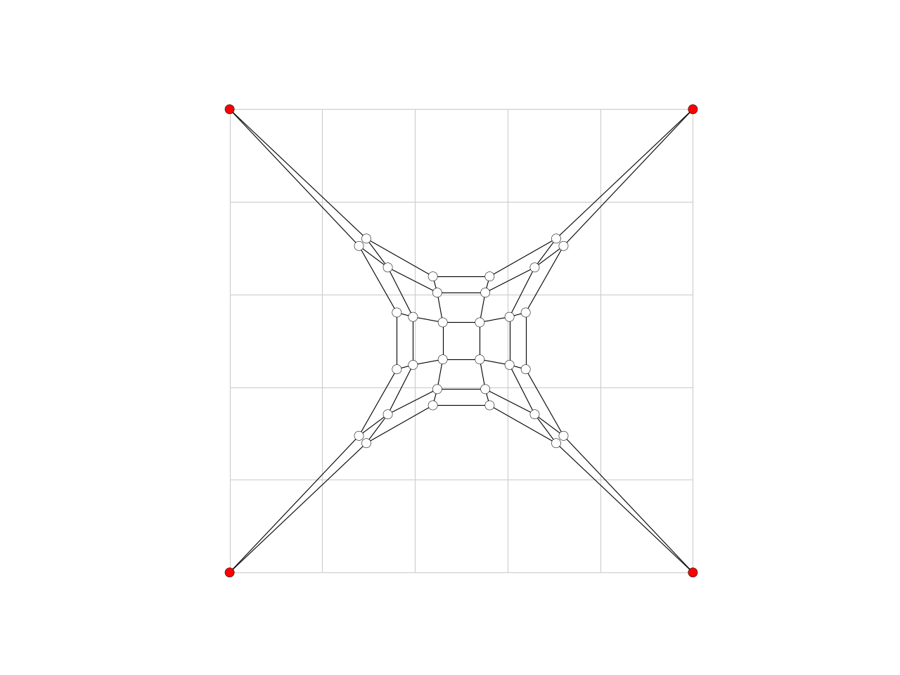

smooth_area
-
compas.geometry.smooth_area(vertices, faces, adjacency, fixed=None, kmax=1, damping=0.5, callback=None, callback_args=None)[source] Smooth a set of connected vertices by moving each vertex to the centroid of the surrounding faces, weighted by the area of the face.
- Parameters
vertices (dict) – A dictionary of vertex coordinates.
faces (dict) – A dictionary of faces referencing the vertices dict.
adjacency (dict) – Adjacency information for each of the vertices.
fixed (list, optional) – The fixed vertices of the mesh.
kmax (int, optional) – The maximum number of iterations.
d (float, optional) – The damping factor.
callback (callable, optional) – A user-defined callback function to be executed after every iteration.
callback_args (list, optional) – A list of arguments to be passed to the callback.
- Raises
Exception– If a callback is provided, but it is not callable.
Examples
import compas from compas.datastructures import Mesh from compas.plotters import MeshPlotter from compas.geometry import smooth_area mesh = Mesh.from_obj(compas.get('faces.obj')) vertices = mesh.get_vertices_attributes('xyz') faces = [mesh.face_vertices(fkey) for fkey in mesh.faces()] adjacency = [mesh.vertex_faces(key, ordered=True) for key in mesh.vertices()] fixed = [key for key in mesh.vertices() if mesh.vertex_degree(key) == 2] lines = [] for u, v in mesh.edges(): lines.append({ 'start': mesh.vertex_coordinates(u, 'xy'), 'end' : mesh.vertex_coordinates(v, 'xy'), 'color': '#cccccc', 'width': 1.0, }) smooth_area(vertices, faces, adjacency, fixed=fixed, kmax=100) for key, attr in mesh.vertices(True): attr['x'] = vertices[key][0] attr['y'] = vertices[key][1] attr['z'] = vertices[key][2] plotter = MeshPlotter(mesh) plotter.draw_lines(lines) plotter.draw_vertices(facecolor={key: '#ff0000' for key in fixed}) plotter.draw_edges() plotter.show()
See also